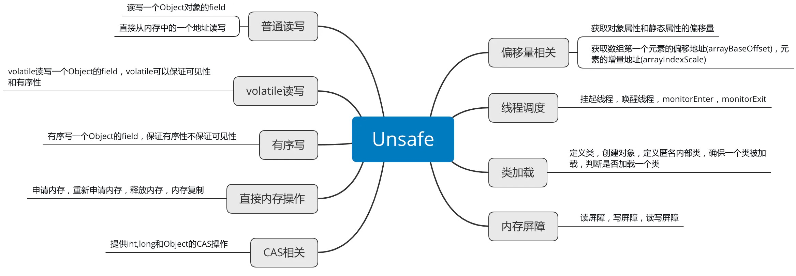

Java 和 C++ 语言的一个重要区别就是 Java 中我们无法直接操作一块内存区域，不能像 C++ 中那样可以自己申请内存和释放内存。Java 中的 Unsafe 类为我们提供了类似 C++ 手动管理内存的能力。Unsafe 类，全限定名是 sun.misc.Unsafe，从名字中我们可以看出来这个类对普通程序员来说是“危险”的，一般应用开发者不会用到这个类。
基本介绍
如下 Unsafe 源码所示，Unsafe 类为一单例实现，提供静态方法 getUnsafe 获取 Unsafe 实例，当且仅当调用 getUnsafe 方法的类为引导类加载器所加载时才合法，否则抛出 SecurityException异常。1
2
3
4
5
6
7
8
9
10
11
12
13
14
15
16
17public final class Unsafe {
// 单例对象
private static final Unsafe theUnsafe;
private Unsafe() {
}
public static Unsafe getUnsafe() {
Class var0 = Reflection.getCallerClass();
// 仅在引导类加载器`BootstrapClassLoader`加载时才合法
if(!VM.isSystemDomainLoader(var0.getClassLoader())) {
throw new SecurityException("Unsafe");
} else {
return theUnsafe;
}
}
}
获取 Unsafe
那如若想使用这个类，该如何获取其实例？有如下两个可行方案。
从 getUnsafe 方法的使用限制条件出发，通过 Java 命令行命令
-Xbootclasspath/a把调用 Unsafe 相关方法的类 A 所在 jar 包路径追加到默认的 bootstrap 路径中，使得 A 被引导类加载器加载，从而通过Unsafe.getUnsafe方法安全的获取 Unsafe 实例。1
java -Xbootclasspath/a: ${path} // 其中 path 为调用 Unsafe 相关方法的类所在 jar 包路径
通过反射获取单例对象 theUnsafe。
1
2
3
4
5
6
7
8
9
10private static Unsafe reflectGetUnsafe() {
try {
Field field = Unsafe.class.getDeclaredField("theUnsafe");
field.setAccessible(true);
return (Unsafe) field.get(null);
} catch (Exception e) {
log.error(e.getMessage(), e);
return null;
}
}
主要功能
Unsafe 的功能如下图：

普通读写
通过 Unsafe 可以读写一个类的属性，即使这个属性是私有的，也可以对这个属性进行读写。
读写一个 Object 属性的相关方法1
2
3public native int getInt(Object var1, long var2);
public native void putInt(Object var1, long var2, int var4);
getInt 用于从对象的指定偏移地址处读取一个 int。
putInt 用于在对象指定偏移地址处写入一个 int。
其他的 primitive type 也有对应的方法。
Unsafe 还可以直接在一个地址上读写1
2
3public native byte getByte(long var1);
public native void putByte(long var1, byte var3);
getByte 用于从指定内存地址处开始读取一个 byte。
putByte 用于从指定内存地址写入一个 byte。
其他的 primitive type 也有对应的方法。
volatile 读写
普通的读写无法保证可见性和有序性，而 volatile 读写就可以保证可见性和有序性。1
2
3public native int getIntVolatile(Object var1, long var2);
public native void putIntVolatile(Object var1, long var2, int var4);
getIntVolatile 方法用于在对象指定偏移地址处 volatile 读取一个 int。
putIntVolatile 方法用于在对象指定偏移地址处 volatile 写入一个 int。
volatile 读写相对普通读写是更加昂贵的，因为需要保证可见性和有序性，而与 volatile 写入相比 putOrderedXX 写入代价相对较低，putOrderedXX 写入不保证可见性，但是保证有序性，所谓有序性，就是保证指令不会重排序。
有序写入
有序写入只保证写入的有序性，不保证可见性，就是说一个线程的写入不保证其他线程立马可见。1
2
3
4
5public native void putOrderedObject(Object var1, long var2, Object var4);
public native void putOrderedInt(Object var1, long var2, int var4);
public native void putOrderedLong(Object var1, long var2, long var4);
直接内存操作
我们都知道 Java 不可以直接对内存进行操作，对象内存的分配和回收都是由 JVM 帮助我们实现的。但是 Unsafe 为我们在 Java 中提供了直接操作内存的能力。1
2
3
4
5
6
7
8
9
10// 分配内存
public native long allocateMemory(long var1);
// 重新分配内存
public native long reallocateMemory(long var1, long var3);
// 内存初始化
public native void setMemory(long var1, long var3, byte var5);
// 内存复制
public native void copyMemory(Object var1, long var2, Object var4, long var5, long var7);
// 清除内存
public native void freeMemory(long var1);
CAS 相关
JUC 中大量运用了 CAS 操作，可以说 CAS 操作是 JUC 的基础，因此 CAS 操作是非常重要的。Unsafe 中提供了 int、long 和 Object 的 CAS 操作。1
2
3
4
5public final native boolean compareAndSwapObject(Object var1, long var2, Object var4, Object var5);
public final native boolean compareAndSwapInt(Object var1, long var2, int var4, int var5);
public final native boolean compareAndSwapLong(Object var1, long var2, long var4, long var6);
CAS 一般用于乐观锁，它在 Java 中有广泛的应用，ConcurrentHashMap，ConcurrentLinkedQueue 中都有用到 CAS 来实现乐观锁。
偏移量相关
1 | public native long staticFieldOffset(Field var1); |
staticFieldOffset：方法用于获取静态属性 Field 在对象中的偏移量，读写静态属性时必须获取其偏移量。
objectFieldOffset：方法用于获取非静态属性 Field 在对象实例中的偏移量，读写对象的非静态属性时会用到这个偏移量。
staticFieldBase：方法用于返回 Field 所在的对象。
arrayBaseOffset：方法用于返回数组中第一个元素实际地址相对整个数组对象的地址的偏移量。
arrayIndexScale：方法用于计算数组中第一个元素所占用的内存空间。
线程调度
1 | public native void unpark(Object var1); |
park 方法和 unpark 方法相信看过 LockSupport 类的都不会陌生，这两个方法主要用来挂起和唤醒线程。LockSupport 中的 park 和 unpark 方法正是通过 Unsafe 来实现的：1
2
3
4
5
6
7
8
9
10
11
12
13// 挂起线程
public static void park(Object blocker) {
Thread t = Thread.currentThread();
setBlocker(t, blocker); // 通过Unsafe的putObject方法设置阻塞阻塞当前线程的blocker
UNSAFE.park(false, 0L); // 通过Unsafe的park方法来阻塞当前线程，注意此方法将当前线程阻塞后，当前线程就不会继续往下走了，直到其他线程unpark此线程
setBlocker(t, null); // 清除blocker
}
// 唤醒线程
public static void unpark(Thread thread) {
if (thread != null)
UNSAFE.unpark(thread);
}
monitorEnter 方法和 monitorExit 方法用于加锁，Java 中的 synchronized 锁就是通过这两个指令来实现的。
类加载
1 | public native Class<?> defineClass(String var1, byte[] var2, int var3, int var4, ClassLoader var5, ProtectionDomain var6); |
defineClass：方法定义一个类，用于动态地创建类。
defineAnonymousClass：用于动态的创建一个匿名内部类。
allocateInstance：方法用于创建一个类的实例，但是不会调用这个实例的构造方法，如果这个类还未被初始化，则初始化这个类。
shouldBeInitialized：方法用于判断是否需要初始化一个类。
ensureClassInitialized：方法用于保证已经初始化过一个类。
内存屏障
1 | public native void loadFence(); |
loadFence：保证在这个屏障之前的所有读操作都已经完成。
storeFence：保证在这个屏障之前的所有写操作都已经完成。
fullFence：保证在这个屏障之前的所有读写操作都已经完成。
If you like this blog or find it useful for you, you are welcome to comment on it. You are also welcome to share this blog, so that more people can participate in it. If the images used in the blog infringe your copyright, please contact the author to delete them. Thank you !